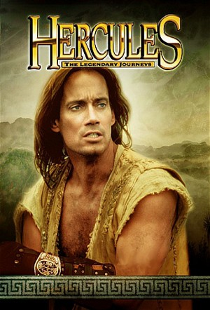

Hercules: The Legendary Journeys (1995)
ActionAdventureDramaFantasyRomance
| Year | 1995 |
|---|---|
| Rating | TV-PG |
| Status | Completed |
| Seasons | 7 |
| Episodes | 119 |
| Genre | Action, Adventure, Drama, Fantasy, Romance |
This is the story of a time long ago, A time of myth and legend, when the Earth was still young. The ancient gods were petty and cruel, and they plagued mankind with suffering and beseiged them with terrors. For centuries the people had nowhere to turn, no one to look to for help. Until he arrived. He was a man like no other. Born of a beautiful mortal woman, but fathered by Zeus, king of the gods. Hercules possessed a strength the world had never seen, a strength surpassed only by the power of his heart....No matter what obstacle, as long as there were people crying for help, there was one man who would never rest --- Hercules
Episodes
Specials
| # | Title | Air Date | Synopsis |
|---|---|---|---|
| 1 | Hercules and the Amazon Women | 1994-04-25 | A village besieged by mysterious unseen monsters is the setting for this disarming display of evil that has Hercules taken captive and tortured under the watchful eye of his evil stepmother, Hera. Swords, sorcery and stu |
| 2 | Hercules and the Lost Kingdom | 1994-05-02 | Hercules is pursued by his deadly, implacable enemy, his stepmother Hera, who uses many supernatural disguises to try and destroy Hercules as he searches for the lost city of Troy. She lay in wait as Hercules undertakes |
| 3 | Hercules and the Circle of Fire | 1994-10-31 | All over the world, the fires are dying. The planet will become an icy wilderness. Mankind is threatened with extinction. At the heart of this fiendish plot lies Hera, Queen of the Gods and Hercules' implacable enemy, wh |
| 4 | Hercules in the Underworld | 1994-11-07 | When villagers begin disappearing it is discovered that they had fallen through a crack in the earth which goes straight to Hades. Hercules, once again comes to the rescue and faces one of his most difficult challenges, |
| 5 | Hercules in the Maze of the Minotaur | 1994-11-14 | Hercules has settled down with his wife and children, but misses the good old days traveling around having exciting adventures. Then one day he is persuaded out of his farming "retirement" to help a distant village which |
| 6 | Hercules and Xena - The Animated Movie: The Battle for Mount Olympus | 1998-08-24 | Animated cross over with Xena. Mighty Zeus brings Hercules' mother, Alcmene, to Mount Olympus, and Hercules, believing she has been kidnapped, leads a rescue mission to save her. Zeus' jealous wife, Hera, decides that it |
Season 1
| # | Title | Air Date | Synopsis |
|---|---|---|---|
| 1 | The Wrong Path | 1995-01-29 | After Hercules and his friend Iolaus stopped a band of hoodlums from robbing an innkeeper, Hercules went home to his family. The horror that followed was over almost before it started. A huge ball of fire burst through |
| 2 | Eye of the Beholder | 1995-02-05 | An entire village was terrorized by a giant Cyclops, prompting a visit from Hercules. It was true that the Cyclops had tossed a traveling toga salesman into a tree and diverted the village's water supply to irrigate Her |
| 3 | The Road to Calydon | 1995-02-12 | A group of refugees in search of a safe haven came upon the ghost town of Parthus, where the groups leader, Broteas, stole a golden chalice from Hera's temple. The theft brought down the wrath of Hera, and only Hercules |
| 4 | The Festival of Dionysus | 1995-02-19 | A power struggle threatened to send the peaceful kingdom of Meliad into war. Fearing the worst Queen Camilla summoned Hercules to the annual Festival of Dionysus. If Dionysus, the god of wine, did not find King Iphicle |
| 5 | Ares | 1995-02-26 | Ares thrived on conflict and bloodshed. Hercules did not share Ares' passion for killing, and when Ares tried to assemble an army of teenage boy-soldiers to do his bidding, Hercules knew he had to stop him. With help f |
| 6 | As Darkness Falls | 1995-03-05 | In the town of Nespa, the winsome penelope was about to marry Marcus - much to the dismay of Nemis the Centaur. Nemis prayed to Hera for a way to win Penelope for himself, and she gave him a wicked cudgel. Hera's chall |
| 7 | Pride Comes Before a Brawl | 1995-03-12 | Pride and arrogance are ugly traits ill befitting an honorable warrior. Yet Iolaus succumbed to pride as the two men made their way to Thrace. First Iolaus fought a taunting bunch of thugs and had to be rescued by Herc |
| 8 | The March to Freedom | 1995-03-19 | When Hercules returned to his childhood home to visit his mother, he encountered Oi-Lan on the trading block. The young woman had been taken prisoner by Belus, a notorious slave trader. Disgusted by the spectacle, Herc |
| 9 | The Warrior Princess | 1995-03-26 | The beautiful warrior woman Xena was intent on securing complete control of the region of Arcadia. To accomplish her goal, Xena decided that Hercules must die. She posed as a maiden in distress and effectively lured Io |
| 10 | Gladiator | 1995-04-02 | Menas Maxius, the wealthiest man in Apropus, enslaved innocent men and forced them to fight wild animals for the amusement of his friends and his wife, the evil Postera. One of those imprisoned was Gladius. His wife, F |
| 11 | The Vanishing Dead | 1995-05-07 | A mystery drew Hercules and Iolaus to the city of Tantalus. There, the bodies of fallen warriors were disappearing from the battlefields. Hercules learned that Ares, the god of war, was to blame. After King Memnos' de |
| 12 | The Gauntlet | 1995-05-14 | Hercules was angry to learn that the warrior princes Xena was raiding villages to increase her power and territory. What Hercules didn't know until later was that Xena's lieutenant, Darphus, was the cruel and heartless |
| 13 | Unchained Heart | 1995-05-21 | Hercules and Xena thought Darphus had been killed in the battle over Parthis. But Ares resurrected Darphus, who headed off to cause more mayhem with his army. Darphus fed his victims to Graegus, Ares' man-eating dog, a |
Season 2
Just how many multi-headed dogs, vengeful serpent ladies and evil-minded miscreants can one demi-God handle? If Hercules' extraordinary second season is any indication then the answer is quite a few.
From battling Echidna, the half-woman, half-serpent monster, to taming Cerberus the hound of Hades, to outfoxing the cunning yet conniving Autolycus, Hercules has his mighty hands full. Yet still manages to find the time to free lolaus from Gorgus' dreaded catacombs and to organize the world's first Olympiad.
It's all part of the epic Season Two romp that established Hercules: The Legendary Journeys as one television's most unique and popular action dramas.
| # | Title | Air Date | Synopsis |
|---|---|---|---|
| 1 | The King of Thieves | 1995-09-04 | Iolaus thought he was helping a friend in need when he defended Autolycus from five attackers but Autolycus took off, leaving Iolaus with the box of stolen jewels from King Menelaus' treasury. When Hercules learned Iola |
| 2 | All That Glitters | 1995-09-11 | The beautiful Voluptua persuaded the legendary King Midas to create the Touch of Gold gambling palace. Hercules and Salmoneus visited the palace, where they discovered corruption and avarice. Hercules was even tricked |
| 3 | What's in a Name? | 1995-09-18 | Hercules' good name is sullied when his mortal half-brother, Iphicles, steals his identity. As Iphicles joins forces with the evil warlord Gorgus and prepares to marry Rena, Gorgus' stepdaughter, Hercules sets out to de |
| 4 | Siege at Naxos | 1995-09-25 | Hercules and Iolaus were on a peaceful fishing trip when trouble interrupted them. Goth and his marauding barbarians were plundering a country tavern, so Hercules and Iolaus stepped in. They captured Goth and headed f |
| 5 | Outcast | 1995-10-02 | Bigotry thrived like an infection in the town where Lyla lived with her centaur husband, Deric, and their son Kefor. Residents like Cletis, Merkus and Jakar were openly opposed to Lyla's marriage to a centaur. Their gr |
| 6 | Under the Broken Sky | 1995-10-09 | Beautiful Lucina was the main attraction at the unsavory pleasure palace in Enola. But she was also the wife of Atticus, the farmer who loved her. Wracked with guilt, Lucina had run off after a deadly fever took the li |
| 7 | The Mother of All Monsters | 1995-10-16 | Echidna was the mother of all monsters, and she was angry. Hercules had fought and killed several of her offspring in the course of his adventures. Now Echidna wanted revenge. She planned to force Hercules' mother, Al |
| 8 | The Other Side | 1995-10-30 | Hercules didn't think he'd see his wife and children again - not in this life, anyway. But he was reunited with his deceased family when he went into the netherworld to rescue young Persephone from Hades. If Hercules d |
| 9 | The Fire Down Below | 1995-11-06 | Hercules' friend Salmoneus hardly realized the trouble he was getting into when he made himself rich by selling off a magnificent treasure trove. The treasure was a gift from the goddess Hera to King Ores, and she was n |
| 10 | Cast a Giant Shadow | 1995-11-13 | When Hercules found Typhon held captive in a boulder, he freed the clumsy but kind giant. Together, they went to Plinth, where Typhon made friends with the villagers and their children. Then Hercules learned Typhon's w |
| 11 | Highway to Hades | 1995-11-20 | The innocent Timuron awaited punishment in the Underworld, and Hades wanted the real wrongdoer, King Sisyphus of Corinth, to take his place. Hades demanded that Hercules apprehend Sisyphus and bring him to the Underworld |
| 12 | The Sword of Veracity | 1996-01-08 | The legendary Sword of Veracity renders one incapable of lying. Hercules and Iolaus set out to find the sword in the Thalian Caves, believing the sword was the key to exonerating their friend, Amphion. Trachis, the evi |
| 13 | The Enforcer | 1996-01-15 | Nemesis allowed her love for Hercules to get in the way of her orders from Hera. As punishment, the evil goddess turned Nemesis into a mortal. Hera then created the Enforcer - a deadly, inhuman assassin bent on killing H |
| 14 | Once a Hero | 1996-01-29 | Hercules and Iolaus traveled to Corith to attend a reunion of Jason and the Argonauts. To their surprise, King Jason had lost his heroic spirit and become a drunk. He had left Medea for Glauce, and Medea took revenge by |
| 15 | Heedless Hearts | 1996-02-05 | Hercules fell in love with Rheanna, a beautiful woman who needed his help. The ruthless King Melkos held the village of Colchis in his tyrannical grip, and he had killed Rheanna's husband. A freak lightning bolt gave I |
| 16 | Let the Games Begin | 1996-02-12 | Hercules escorted a young Spartan named Damon back to the village of Propontus, where he discovered the residents were consumed with war. With help from his old friend Atalanta, Hercules organized a series of athletic c |
| 17 | The Apple | 1996-02-19 | Iolaus was delighted to meet Aphrodite, who offered him a special golden apple. The apple would make any woman Iolaus wanted fall hopelessly in love with him. The spell worked perfectly on Thera, but there was one prob |
| 18 | Promises | 1996-03-14 | In the town of Zebran, King Beraeus was about to marry Ramina when the warrior Tarlus abducted her. Hercules convinced the king to let him go after Tarlus, whom Hercules knew to be a good man. He and Iolaus rescued Ram |
| 19 | King for a Day | 1996-03-18 | Iolaus agrees to stand in for his royal look-alike Prince Orestes on the day of the prince's coronation and marriage to the beautiful Niobe in order to prevent Orestes' brother Minos from usurping the throne. |
| 20 | Protean Challenge | 1996-04-22 | Hercules' sculptor friend Thanis was framed for robbery and faced cruel punishment: the loss of both hands. When Iolaus and Hercules set out to prove their friend's innocence, they learned that the deformed god Proteus, |
| 21 | The Wedding of Alcmene | 1996-04-29 | In the town of Corinth, Hercules' mother, Alcmene, prepared to marry King Jason. The marriage of the king to commoner meant Jason had to give up his throne, so he chose Hercules to succeed him. However, Hercules declin |
| 22 | The Power | 1996-05-06 | Deon was surprised to discover he had a magical gift: He could make others do whatever he wanted. First he made attacking bandits drop their weapons and depart. Then he made Salmoneus dance like a chicken. His mother, |
| 23 | Centaur Mentor Journey | 1996-05-13 | Hercules' old mentor, Ceridian the centaur, was dying. His last wish was for Hercules to find another of his protégés, the bold and brash centaur Cassius, and persuade him not to wage war against the humans. But Hercul |
| 24 | The Cave of Echoes | 1996-06-24 | No one ever came out of the Cave of Echoes. But Hercules and Iolaus were determined to rescue young Melina, who had disappeared inside the cave. Parentheses, a young writer whom they had recently befriended, joined the |
Season 3
| # | Title | Air Date | Synopsis |
|---|---|---|---|
| 1 | Mercenary | 1996-10-07 | The mercenary Derk had committed murder, and Hercules was bringing him to Sparta to stand trial when a terrible storm wrecked their boat. Stranded on a desolate island, Hercules pursued Derk even as a band of pirates ch |
| 2 | Doomsday | 1996-10-14 | Daedalus the inventor was consumed with guilt over the death of his son, Icarus, who had flown too close to the sun. When Hercules found his longtime friend in Euboea, the unhappy Daedalus was inventing weapons of mass |
| 3 | Love Takes a Holiday | 1996-10-21 | Hephaestus, the god of fire, secretly pined for Aphrodite. His devious assistant. Iagos, hatched a plan to give Hephaestus a substitute for Aphrodite in return for a powerful bronze shield. Iagos went to retrieve Leand |
| 4 | Mummy Dearest | 1996-10-21 | Awakened by robbers, the mummy Ishtar walked again. Hercules set out to find the mummy with Ishtar's descendant, Princess Anuket. But the evil Sokar was also after the mummy. Sokar acquired the mummy's powerful golden |
| 5 | Not Fade Away | 1996-10-28 | When word of a female killing machine on the loose reached Iolaus, he expected to find the Enforcer. Instead he encountered the Enforcer II, a new and improved version of Hera's assassin. She mortally wounded Iolaus, w |
| 6 | Monster Child in the Promised Land | 1996-11-04 | Typhon, the gentle giant, and Echnida, the mother of all monsters, sent word of their newborn to Hercules. But the thief Klepto abducted the child, a squid-like creature named Obie. Klepto brought the little monster to |
| 7 | The Green-Eyed Monster | 1996-11-11 | Aphrodite was consumed but jealousy at the notion that Psyche, a mortal, was as beautiful as she. But her son, Cupid, was in love with Psyche. When Hercules was accidentally shot by Cupid's bow, making him fall in love w |
| 8 | Prince Hercules | 1996-11-25 | The ruthless Queen Parnassa of Kastus lost her son, Millius, in battle years ago. Working with Hera, who caused Hercules to suffer amnesia, the Queen formed a plan to make the son of Zeus think he was really Millius, th |
| 9 | A Star to Guide Them | 1996-12-09 | A dream convinced Iolaus to travel north, joining others equally compelled. Meanwhile, King Polonius and Queen Maliphone attempted to round up all the male children in the province to make sure their own child would inh |
| 10 | The Lady and the Dragon | 1997-01-13 | A dragon named Braxis was on the loose in Laurentia, destroying villages and killing warriors who had been comrades of Iolaus and Hercules. The warlord Adamis and the evil Cynea were behind the dragon's actions. They m |
| 11 | Long Live the King | 1997-01-20 | King Orestes, Iolaus' cousin and identical look-alike, hoped to establish a League of Nations to bring peace to all the kingdoms in the area. But King Xenon of Garantus had other plans. His assissin killed Orestes, and |
| 12 | Surprise | 1997-01-27 | Alcmene, Iphicles, Jason, Falafel and Iolaus only wanted to throw Hercules a birthday party. Instead they got poisoned by the treacherous Callisto, who was on a mission from Hera to kill Hercules. To save them, Hercule |
| 13 | Encounter | 1997-02-03 | Prince Nestor wanted the golden horns and hooves of Serena, the beautiful half-woman half-deer known as the Golden Hind. Nestor also wanted to kill Hercules with an arrow dipped in the Golden Hind's blood, and that was |
| 14 | When a Man Loves a Woman | 1997-02-10 | Hercules asked Serena to marry him, and she found the courage to ask Ares for her freedom. But the jealous god of war was determined to destroy their relationship. Meanwhile, Serena and Hercules traveled to the Other S |
| 15 | Judgment Day | 1997-02-17 | Hercules found it increasingly difficult to adjust to life without his superhuman strength. Meanwhile Ares and his nephew, Strife, plotted Hercules demise which didn't help matters. Then Hercules awoke one morning to f |
| 16 | The Lost City | 1997-02-24 | Searching for his missing cousin Regina, Iolaus and his companion, Moira, found Salmoneus instead. The craftly friend to Hercules and Iolaus had stumbled upon an underground city that appeared to be a Utopia. But the c |
| 17 | Les Contemptibles | 1997-04-07 | The year was 1789, Count Francois Demarigny was not interested in joining the French Revolution, he just wanted the lady Marie deValle's money. He pretended to be the Chartreuse Fox, and his comrades Jean-Pierre and Rob |
| 18 | Reign of Terror | 1997-04-14 | King Augeus had gone mad. Believing himself Zeus, the King ordered Aphrodite's temple to be rededicated to Hera. The evil goddess herself offered Augeus godly powers if he could kill Hercules by sunset. Aphrodite, ang |
| 19 | The End of the Beginning | 1997-04-21 | Hercules was in the middle of a fight with bullies when Autolycus stopped time. Autolycus had stolen the Cronus Stone from King Quallius' palace museum. Suddenly he traveled five years back in time. Hercules witnessed |
| 20 | War Bride | 1997-04-28 | Princess Melissa of Alcinia didn't want to marry the corpulent Prince Gordius of Lathia, but she didn't want to be sold into slavery either. Hercules unchained Melissa and the rest of the slave girls in the marketplace. |
| 21 | A Rock and a Hard Place | 1997-05-05 | Was Cassus innocent or did he really murder an entire family? Hercules was determined to find out before the angry mob lynched Cassus. After a fight, the two men found themselves trapped inside an abandoned mine. A la |
| 22 | Atlantis | 1997-05-12 | After his transport ship went down at sea, Hercules found himself on the shores of Atlantis. There he met Cassandra, a beautiful woman whose premonitions told her Atlantis was doomed. But King Panthius, scorning Cassan |
Season 4
| # | Title | Air Date | Synopsis |
|---|---|---|---|
| 1 | Beanstalks and Bad Eggs | 1997-10-11 | With help from Autolycus, the king of thieves, Hercules set out to find Lianna, who had been kidnapped by the giant Typhoon and taken to a castle in the clouds. Climbing a huge beanstalk, the two men found Lianna in Typ |
| 2 | Hero's Heart | 1997-10-18 | Iolaus was depressed by his failure to save a woman from falling to her death, and he told Hercules to find another partner. Fortune, the goddess of luck, was behind it all. Feeling bad for Iolaus, she tried to make am |
| 3 | Regrets...I've Had a Few | 1997-10-25 | Celestra -- also known as "Death" -- came for Jaris, Hercules old friend. The goddess' appearance prompted Hercules to remember the time when, as a cocky youth, he met Celestra for the first time. It happened when youn |
| 4 | Web of Desire | 1997-11-01 | The pirate captain Nebula tried to bury her stolen trunk of jewels in a seaside cave. But the horrifying Arachne, half spider and half woman attacked her. When Hercules and Iolaus showed up, they joined forces with Neb |
| 5 | Stranger in a Strange World | 1997-11-08 | A lightning bolt from the dying Zeus opened a vortex to a parallel universe, where Iolaus was a jester and Hercules was the malevolent Sovereign. This alternate Hercules and the alternate Xena were lovers, and they were |
| 6 | Two Men and a Baby | 1997-11-15 | Fleeing from Ares' soldiers, Nemesis burst into Hercules' campsite and proclaimed him the father of her sixpmonth-old son, Evander. Then she slipped away, leaving Hercules and Iolaus with the child, who soon demonstrate |
| 7 | Prodigal Sister | 1997-11-22 | Ruun's parents were killed by renegade Amazons, who blind ed the boy during their attack. Years later, Hercules freed Ruun from slavery and the two searched for Ruun's sister, Siri. When they found her, they discovered |
| 8 | ...And Fancy Free | 1997-11-29 | Ever since she was a little girl, Althea wanted to be a dancer. The awkward young woman endured taunts from the graceful Oena because she wanted to compete in the Panathenia ballroom dance competition. Then Hercules vo |
| 9 | If I Had a Hammer... | 1998-01-24 | Hercules reluctantly agreed to pose nude for King Armand's new museum centerpiece in exchange for the King's donation to the war orphans' fund. Meanwhile, the blacksmith, Atalanta, feeling lonely and frustrated, turned |
| 10 | Hercules on Trial | 1998-01-31 | Hercules' good deeds landed him on trial when Kazankis, a Hercules impersonator, was killed. Charged with manslaughter, sedition and undermining the authority of the gods, Hercules pleaded innocent on all counts. But S |
| 11 | Medea Culpa | 1998-02-07 | When they were teenagers, Hercules, Iolaus and Jason banded together to kill the Ghidra, one of Hera's deadly pets. On their journey they met the beautiful young Medea, who decided to join their quest. Soon a love tria |
| 12 | Men in Pink | 1998-02-14 | When Salmoneus and Autolycus were mistaken for the murderers of King Pholus, they disguised themselves as performers in the widow Twanky's all girl dance troupe. Autolycus promptly fell for the voluptuous Cupcake, while |
| 13 | Armageddon Now (1) | 1998-02-21 | Hope, the treacherous daughter of Dahak and Gabrielle, went to the Ixion Caverns and freed Callisto. Hope gave the warrior-goddess a mission: rid the world of Hercules. Callisto joined forces with Ares, and the two reo |
| 14 | Armageddon Now (2) | 1998-02-28 | While Hercules and his double, the Sovereign, were stuck in the Netherworld, Iolaus traveled back in time to protect young Alcmene. But he couldn't prevent Callisto from killing Hercules' mother. Callisto then found he |
| 15 | Yes, Virginia, There is a Hercules | 1998-03-07 | After an earthquake shook Los Angeles, the writers and producers of Hercules discovered their star, Kevin Sorbo, had disappeared. An emergency staff meeting was called in the show's production offices. Many solutions t |
| 16 | Porkules (1) | 1998-03-28 | Discord shot Hercules with Artemis' bow, turning him into a pig. Then she sent the hunter Colchis after Hercules, but the pig jumped from Iolaus' arms and ran off. After a butcher caught him and threw him into a meat wag |
| 17 | One Fowl Day (2) | 1998-04-04 | The pig Katherine, who had fallen in love with Hercules, told him of her deisre to become human. Hearing this, Aphrodite turned Katherine into a woman in her own image. The human Katherine happily stripped off all her c |
| 18 | My Fair Cupcake | 1998-04-25 | Autolycus convinced his former girlfriend, Cupcake, that he wanted to fix her up with Prince Alexandros at a royal ball. In truth, Autolycus wanted to steal the sapphire of Antioch from the prince. Introduced to Alexand |
| 19 | War Wounds | 1998-05-02 | Hercules' brother, King Iphicles of Corinth, was not with his wife when she died -- he was out controlling rioting soldiers. For this he blamed the vetern warriors led by Ajax and demanded they leave Corinth without ded |
| 20 | Twilight (1) | 1998-05-09 | As Alcmene's health failed, Hercules recalled the time years ago when the Parthans invaded Caylan territory. Young Hercules, Jason and Iolaus joined King Eteocles and fought bravely to repel the invaders, but the King w |
| 21 | Top God (2) | 1998-05-16 | Upon Alcmene's death, Zeus asked Hercules to join him in ruling the gods of Olympus. Hercules, still bitter toward his father, couldn't decide. He recalled meeting Apollo, his half-brother, years ago. Apollo gave him |
| 22 | Reunions (3) | 1998-05-23 | While Iolaus paid a visit to his mother, Hercules explored Olympus. He was hurt to learn the real reason his father had brought him there: Zeus needed protection from Hera and the other gods, who were conspiring agains |
Season 5
While helping his friend King Gilgamesh battle the evil forces; of Dahak in Sumeria, Hercules' world is ripped apart when a betrayal by Gilgamesh leads the heroic, yet tragic death of his closest friend - lolaus, Haunted by the thought that he may be responsible for lolaus' death, Hercules vows the unthinkable: He will enter the underworld and bring his friend back from the dead.
Can he retrieve lolaus' lost soul and is he prepared to learn the dark truth about the connection between himself and the evil Dahak?
This gripping and unsettling storyline in the season premier, "Faith," launches Hercules into an epic fifth season that sends the dashing demi-god into series of soul-searching journeys unlike any other he's faced.
| # | Title | Air Date | Synopsis |
|---|---|---|---|
| 1 | Faith (1) | 1998-10-03 | Nebula took Hercules and Iolaus to Sumeria, where the angry gods were leveling cities. To remedy the situation, King Gilgamesh took Hercules with him on a series of physical trials in a pyramid, where they retrieved a c |
| 2 | Descent (2) | 1998-10-10 | Stricken with grief over the loss of Iolaus, Hercules vowed to bring him back from the Sumerian version of the Underworld. Nebula, who confessed her love for Iolaus in his final moments, accompanied Hercules on his jour |
| 3 | Resurrection | 1998-10-17 | Bronagh, leader of the Celts on the island of Eire, told Hercules he was their "Chosen One" -- chosen to lead the Celts to freedom. But the gods of Eire didn't like the Celts worshiping Druids, so they sent Morrigan, a |
| 4 | Genies and Grecians and Geeks, Oh My | 1998-10-24 | Salmoneus and Autolycus obtained a Sultan's lamp and released Jinni the genie, who gave them three wishes to share. Autolycus asked to be invisible. Instead Jinni made him intangible, so he couldn't grab anything. Sal |
| 5 | Render Unto Caesar | 1998-10-31 | On the island of Eire, Hercules organized the feuding Celtic tribes to fight Caesar's approaching army. He also helped the half-god/half-human Morrigan find the good within herself. She was the former servant of the cr |
| 6 | Norse by Norsevest (1) | 1998-11-07 | Hercules wanted to save the Norse god Balder, but Balder explained that his death was foretold in the Book of Fates and could not be changed. Sure enough, Hercules was tricked by Loki, the god of mischief, into accident |
| 7 | Somewhere Over the Rainbow Bridge (2) | 1998-11-14 | Odin believed the answer to the riddle ""When light dies, then will Ragnarok begin"" would bring about the end of all things. Loki went to Odin in disguise and gave him a metal mask. When the king of Norse gods looked i |
| 8 | Darkness Rising | 1998-11-21 | Hercules and Morrigan were enjoying life on the island of Eire until they found the Druids slaughtered. Recognizing the work of the demon Dahak, Hercules and Morrigan returned to Sumeria. There, they found Nebula had be |
| 9 | For Those of You Just Joining Us | 1999-01-09 | Studio head B.S. Hollinsoffer ordered the producers and writers to a retreat at Camp Wannachuck, where he hoped they would come up with some better ideas for Hercules episodes. Kevin Sorbo, who was really Hercules, arri |
| 10 | Let There Be Light (1) | 1999-01-16 | Hercules and his friends followed the demon Dahak to Corinth, where Dahak -- in Iolaus' body -- had set himself up as the people's savior. He wanted to return the world to a time when the Titans ruled. Hercules and Zar |
| 11 | Redemption (2) | 1999-01-23 | Dahak, chained to the altar in the body of Ioalus, hatched a plan to kill Ares, which would give him the power to break his bonds. Meanwhile, the demon showed Hercules how he had seduced Iolaus at the moment of death. |
| 12 | Sky High | 1999-01-30 | When a volcano threatened to destroy the people of Mount Pelion, Hercules decided to blow a hole in the far side of the volcano, allowing the lava to flow into the sea. The Amazon Ephiny joined him, and for a third, Her |
| 13 | Stranger and Stranger | 1999-02-06 | Hercules jumped through a vortex into the Netherworld. There he found his evil double, the Sovereign, as well as the cowardly double of his late sidekick, Iolaus. Disguising himself as the Sovereign, Hercules learned t |
| 14 | Just Passing Through | 1999-02-13 | Hercules missed the original Iolaus. He remembered when a sacred ruby had been stolen from the head of the stone panther, and he and Iolaus went to retrieve it. Autolycus committed the crime, and he swallowed the ruby. |
| 15 | Greece is Burning | 1999-02-20 | Althea, Hercules' former dance partner, became a fashion designer and tried to enter her designs in Oena's fashion show. But Count Von Verminhaven barred Althea as a favor to Oena, who was Althea's rival. Hercules deci |
| 16 | We'll Always Have Cyprus... | 1999-02-27 | Havisha, a former priestess of the oracle of Cyprus, and her boyfriend Drayus were killed by thugs on the night he proposed to her. Havisha rose from the dead on a mission of vengeance. After killing the men who murder |
| 17 | The Academy | 1999-03-27 | Hercules and Jason arrived at Cheiron's academy to find things greatly changed. The youths were out of control, and the headmaster left the school in Hercules' hands. Zylus, an upperclassman, had a secret plan to take |
| 18 | Love on the Rocks | 1999-04-24 | Nautica, a mermaid, wanted to see the world. But her father, Triton, had arranged a marriage for her. Nautica found a way out when Discord gave her legs. When she met Iolaus 2, they both fell immediately in love. Unf |
| 19 | Once Upon a Future King | 1999-05-01 | Merlin hurled the vicious warlord Arthur of Camelot and his sorceress advisor Mab a thousand years back in time to Hercules' world. But Mab helped Arthur conquer Britannia. Later she wanted to go back to her own time, |
| 20 | Fade Out | 1999-05-08 | The Rock of Arges was cursed by Zeus. Villagers who handled it began to fade out of existance, so Hercules saved them by crushing it. Unfortunately, this caused the curse to transfer to Hercules -- which was exactly wh |
| 21 | My Best Girl's Wedding | 1999-05-15 | Iolaus 2 was shocked to learn that Nautica, his mermaid love, had been given legs and was about to marry Lysaka. Hercules went to see Triton to get to the heart of the matter, and found his former wife, Serena. They di |
| 22 | Revelations | 1999-05-22 | The Archangel Michael was the harbinger of the apocalypse. He released the horsemen War, Famine and Pestilence upon the land. Meanwhile, the late Iolaus, who defied The Light on the other side to warn his friend of the |
Season 6
| # | Title | Air Date | Synopsis |
|---|---|---|---|
| 1 | Be Deviled | 1999-10-02 | Sin came looking for Hercules in the guise of Serena. She said she needed Hercules' help to recapture Xerxos, a murderer who had escaped from her world of evil souls. In truth Sin was in league with Xerxos. She poison |
| 2 | Love, Amazon Style | 1999-10-09 | When Hercules saw the Amazons waiting tables and dancing in a chorus line, he knew they had to be under a spell cast by Aphrodite. Sure enough, the goddess of love was responsible. She had broken up with Hephaestus, wh |
| 3 | Rebel with a Cause | 1999-10-16 | Hercules was not happy to find that Creon had taken the throne of Thebes from Oedipus. But Hercules had his hands full with Oedipus' daughter, Princess Antigone -- a brash drunk. As Hercules tried to restore her confid |
| 4 | Darkness Visible | 1999-10-30 | Hercules and Iolaus answered Vlad's call for help to defend his kingdom against vampires. Arriving in Dacia, they were joined by Galen, whose sister Nadia had gone to Vlad's castle and never returned. Soon they discove |
| 5 | Hercules, Tramps & Thieves | 1999-11-06 | Autolycus joined Hercules on his way to the First Bank of Greece and promised not to rob it. Once in town, they found Autolycus' ex-wife Luscious starring in a show at Club Nymph-O-Mania. The next day, the bank was rob |
| 6 | City of the Dead | 1999-11-13 | Hercules and Iolaus arrive in Egypt just in time to save Queen Nefertiti from assasins. Iolaus suspected Princess Amensu of perpetrating the crime, because Amensu wanted Egypt to attack Greece while her mother did not. |
| 7 | A Wicked Good Time | 1999-11-20 | The goddess Discord needed a third witch to join Haleh and Sariah, Seska, a troubled teen, seemed the perfect choice. Now Seska could take revenge on Magnus, the town bully. When Hercules arrived to protect her from ha |
| 8 | Full Circle | 1999-11-27 | Evander, son of Ares, had the power to create anything he could imagine. Zeus, wishing to make amends with Hera, used the boy to free his former love from the Abyss of Tartarus. Unfortunately, the Titans were released, |
| 9 | Hercules the Legendary Journey S06E09 | 2026-03-04 | |
| 10 | Hercules the Legendary Journey S06E10 | 2026-03-04 |